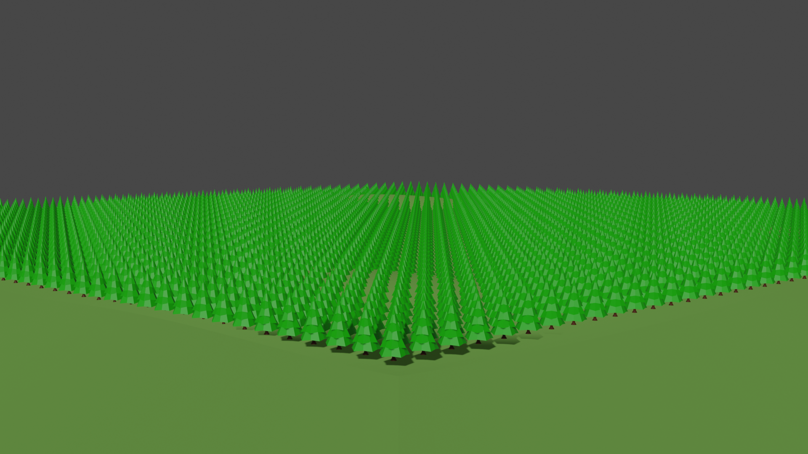

This image alone is just under 2,550 trees. Imagine 5 billion!!
Guess how many tons of carbon is released into the atmosphere due to deforestation.
Carbon emmision is a big part of climate change, deforestion certainly isn't helping.
tonsPress ENTER to submit